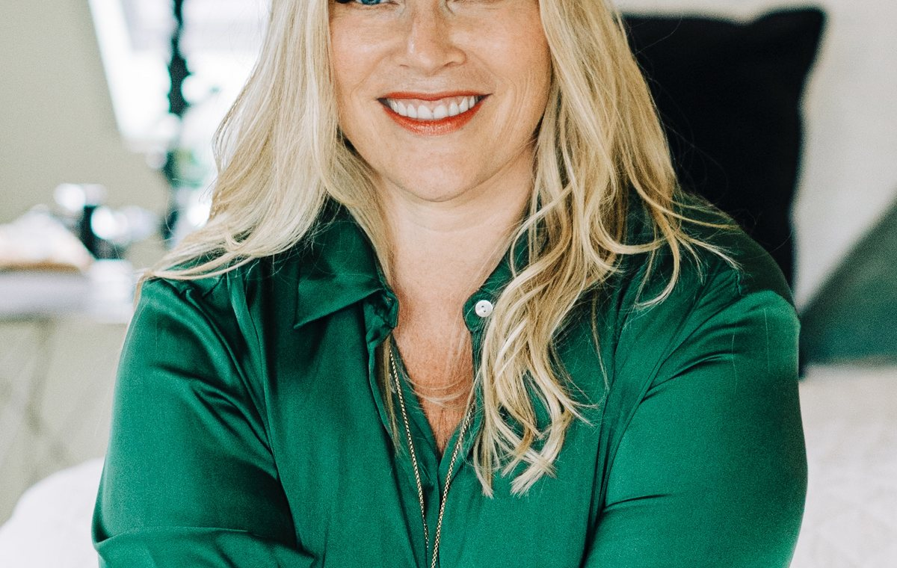
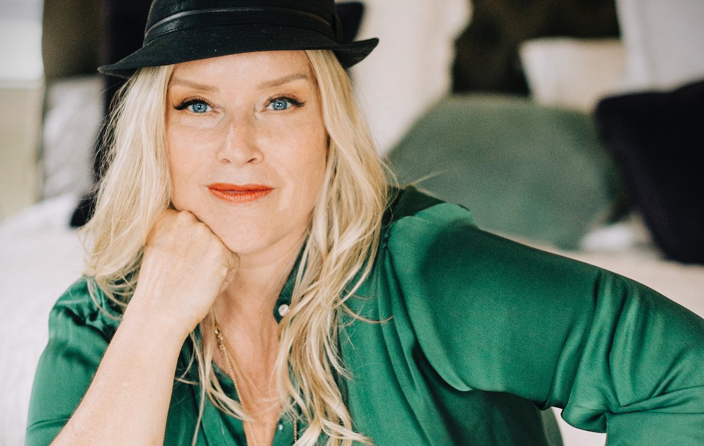
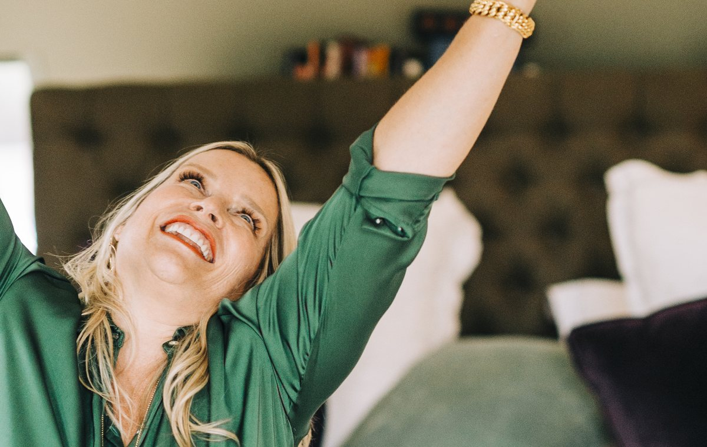
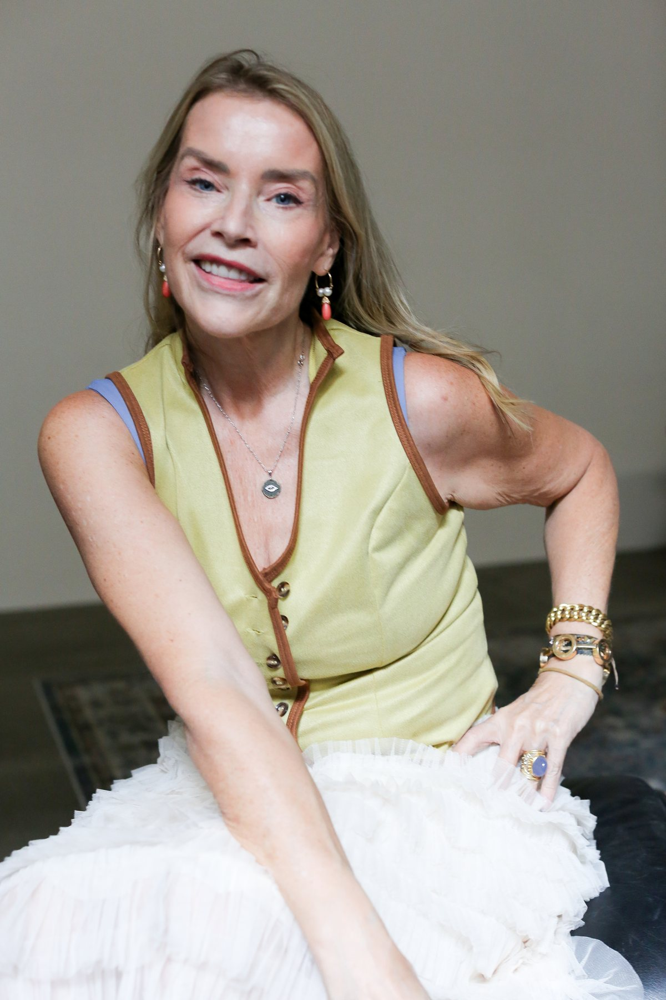
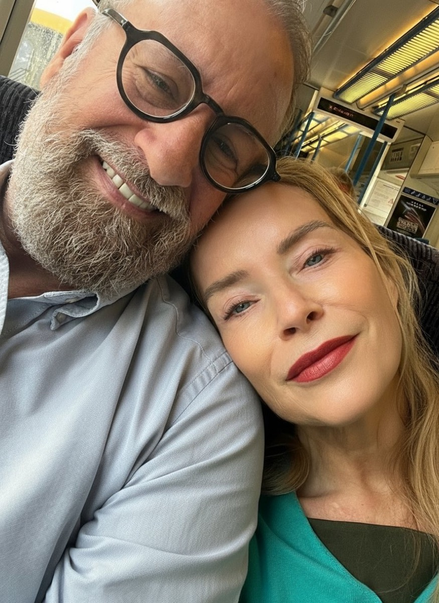
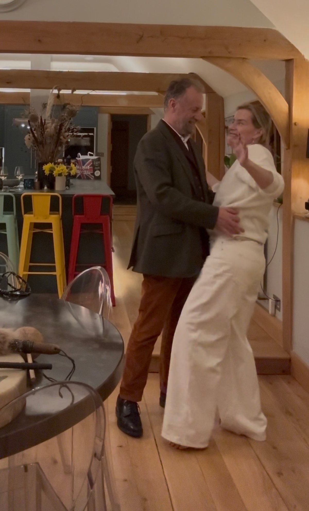
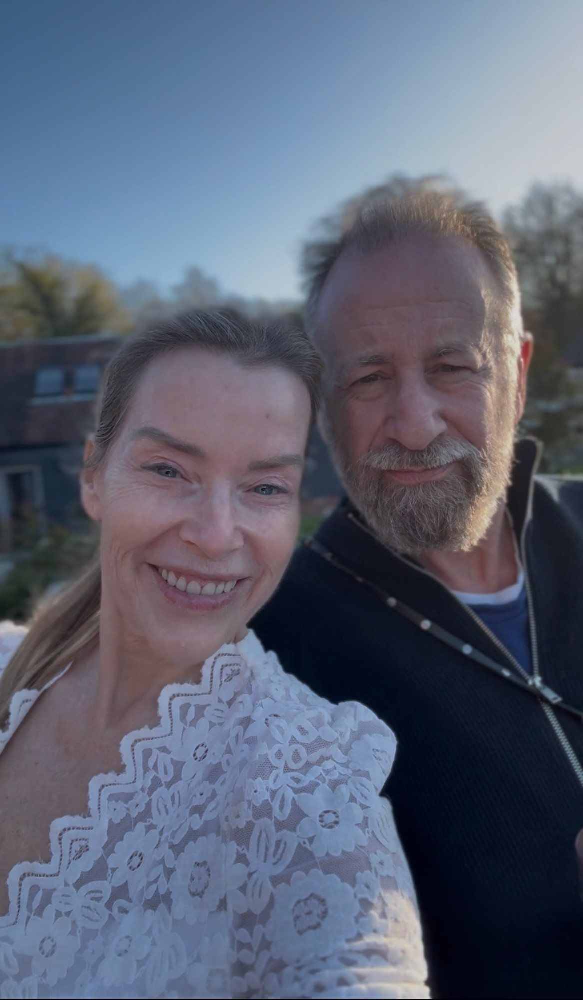
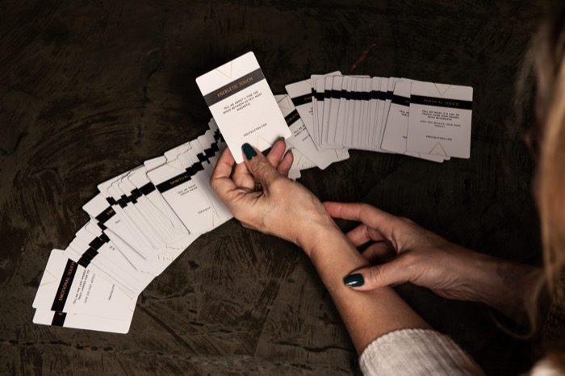

What is actually happening
You have had this conversation before. Nine times, maybe more.
It starts reasonably. Somewhere along the way one of you explains, the other one defends, and then you are no longer talking about the thing.
You are talking about who is right.
An hour later nothing has moved, and both of you are tired in a way that sleep does not fix.
So you stop trying.
That is the part nobody says out loud.
You do not necessarily have a row about it. You just quietly take it off the list of things you bring up.
Because the conversation never seems to stay on the subject.
It starts with one real thing and somehow arrives at who did not empty the dishwasher, and from there at something from three years ago that neither of you has put down.
You both leave with more on the pile than you came in with.
It does not mean you do not love each other.
It is what can happen when two people are trying to speak and respond to each other at the same time.
You explain.
They defend.
You clarify what you meant.
They tell you what they meant.
One of you tries to fix it.
Suddenly the thing one of you was trying to say has disappeared underneath the conversation about it.
The moment I defend, you are no longer simply being heard. You are being answered.
The moment I fix, your experience has become a problem I am trying to solve.
What you are missing is not honesty.
You may have plenty of honesty.
What you are missing is a structure that lets one person speak and the other actually receive it.

What this is
This is the Dyad.
You can use it with another person, or you can use it on your own.
With another person, one of you speaks and the other listens within a very particular structure.
On your own, I call it mind clearing. Same prompt. Same timer. Same principle of staying with the question rather than taking your first answer and moving on.
I have run the Dyad with 650 couples and thousands of clients, and taught it to hundreds of therapists.
And it is almost insultingly simple.
That is the structure.
In The Three Answers, you're going to practise it across seven sittings, with one new prompt opening each day.
Why the timer matters
Fifteen minutes gives the conversation edges.
You both know when you are beginning, and you both know there is an ending.
Nobody has to wonder: How long is this going to go on?
You have agreed to stay with one prompt for fifteen minutes. That is the container.
Because you are not rushing to finish the conversation or move on to the next question, you get to stay with the same thing for longer than you normally might.
The first answer may come quickly. Then the same prompt comes back to you. You answer again. Again.
You may discover that the answer you had ready was not the only answer you had.
That is why the timer matters.
Not because fifteen minutes is a magic number.
The fifteen minutes gives you somewhere to stay.

The three answers
One person speaks. The other person may say only one of these three things:
That's it.
- No "yes, but…"
- No "I felt the same when…"
- No explaining your side.
- No question of your own.
Then you keep going. Same prompt. Back and forth.
Until the timer goes. That's the practice.
Listen first, then watch
Before you do your first Dyad, there are two short pieces I want you to go through.

I'll talk you through what tends to happen in an ordinary conversation, and what changes when we put this structure around it. Listen to this one first.
This is my partner and me actually doing it in front of you.
The video is the one I really want you to watch. Because reading the structure and seeing it happen are two different things.
In particular, watch for:
- How short one clear communication actually is.
- How quickly we swap once the communication has been received.
- What happens when something tender is said and the listener doesn't immediately move in to soothe, encourage or pull more out of them.
That last one matters.
You may feel the instinct to reach across, hug them, encourage them to keep going or say something that lets them know you're there.
For these fifteen minutes, stay with the structure instead.
Let the communication land. Then: Thank You. Swap.

Why this is harder than it sounds
So often, we don't listen simply to understand.
We listen and respond at the same time.
Watch yourself the next time somebody tells you something real.
You might nod. Agree. Disagree. Reassure them. Ask a question.
Or somewhere around their third sentence, you may already be building what you're going to say the moment they stop.
The Dyad asks you not to do that.
You may be surprised by how difficult that feels.
Especially when somebody you love says something tender.
You may want to reach across and put your arms around them.
You may want to tell them it's okay.
You may want to encourage them to say more, or ask another question to help them get there.
All of those impulses can come from care.
But for these fifteen minutes, we're practising something different.
Can you let what they said land without immediately doing something with it?
Can you stay with them without fixing, soothing, explaining, encouraging or making their communication about your response?
You don't have to pull more out of them. You don't have to make the moment better.
Receive what they actually gave you. Then use one of your three answers.
That's the practice.

Before you start
Do this when you both have some capacity for it. A morning. An afternoon. A weekend.
It may well not be at night. At the end of a long day, you may both have less attention available for something that asks you to really listen.
Give the fifteen minutes a little bit of space.
- 1Phones away
Phones in another room. Keep one only for the timer and prompt.
- 2Face each other
Sit or stand facing each other. Take one breath in through the nose and out through the mouth, together.
- 3Look at each other
You might laugh. Look away. Want to make a joke of it.
Let that happen. Notice it. It is information, not a wrong start.
- 4Decide who is A and who is B
Set your timer for fifteen minutes. Begin.
The fifteen minutes
A asks the prompt. Out loud, exactly as written.
B takes a breath and lets it land. Then B gives one clear communication.
Not a speech. One thing, honestly, from wherever the question lands for them.
A responds with one of the three answers. Thank You. Clarify That. Summarise That. Nothing else.
If A says Clarify That or Summarise That, B responds to that. A listens again.
When A reaches Thank You, you swap. Same prompt. Now B asks and A speaks.
Back and forth with the same prompt until the timer goes.
The rules that make it work
- No fixing.
- No defending.
- No interrupting.
- No debating.
Do not ride on each other's communication.
When it's your turn, don't answer what they just said or continue their thread.
Your turn is your own.
Take the same prompt fresh and notice where it lands for you.
There is no correct answer. There is only what is present for you right now.
Stay with the same prompt for the full fifteen minutes. You may think you've already answered it. Ask it again.
Your first answer isn't necessarily your only answer.
When the timer goes, finish the communication you're in, reach Thank You, and stop.
That's the whole structure.
Before you start
Begin.

Your seven prompts are in the app
Seven prompts. Seven sittings. One prompt each day.
Your prompts live in the app with your fifteen-minute timer.
Open The Three AnswersTap once and it's yours on this phoneTap the link once and it's yours on that phone. Add it to your home screen and you can come straight back to it each day.
Your first prompt will be waiting for you. The next one opens the following morning.
That is deliberate.
You are not supposed to see all seven at once, choose your favourite or race ahead.
Each prompt gets its own fifteen-minute sitting.
The prompts are in an order. They begin more simply and gradually ask a little more of you as you become familiar with the Dyad.
Don't skip ahead. Don't double up.
If you can, do one sitting a day for seven days. If you miss a day, that's fine. Pick it up again the next day.
One prompt. One sitting. Fifteen minutes.
You can also do this on your own.
I call this mind clearing, and it isn't the consolation version.
The principle is the same: one prompt, a clear container, and staying with the question after you think you've answered it.
- Choose the 10-minute timer in the app.
- Read the prompt out loud.
- Answer it out loud to the room or write your answer down, whichever you will actually do.
- When you run out of things to say, read the same prompt again. Answer it again.
Keep going until the timer goes.
That moment when you think, I've got nothing else, is not a reason to stop. You may simply have reached the end of the answer that came most easily.
Ask the question again and see what else is there.
There is no Clarify That or Summarise That when you're on your own. The repetition does that job.
Same question. Again. Until the timer goes.
A note on two of the prompts
Two of your seven prompts are written specifically for a partner. You'll recognise them because they use words like "by me" or "we."
If you're doing The Three Answers on your own, take the partner language out and ask the underlying question of yourself.
The other five can be used exactly as written.
Your seven sittings
Seven sittings. One prompt each. You did it.
This plays by itself in the app when your fifteen minutes are up.
Afterwards
When the timer goes, finish the communication you're in and reach Thank You. Then stop.
- Don't immediately discuss what was said.
- Don't analyse it.
- Don't ask, "When you said that, did you mean...?"
- Don't start explaining your side now that the fifteen minutes are over.
You have just spent fifteen minutes practising letting one another's communication land without fixing, defending or debating it.
Let it land.
You don't need to do anything with it straight away. Leave it alone for now.
Let the conversation have some space before you decide whether anything else needs to be said.
What you might notice
At first, the structure might feel a little wooden.
You may be concentrating on remembering the three answers. You may forget and start responding normally. You may want to explain, defend, fix, reassure or ask another question.
Notice it. Then come back to the structure.
You may also notice that when the same prompt comes back to you, your answer changes.
Something you were certain you'd finished with suddenly has something else underneath it.
Or you hear yourself say something you hadn't realised was there until you said it out loud.
And some days?
Nothing dramatic happens at all. You answer the question. Your partner answers the question. The timer goes.
That counts too.
The point isn't to manufacture a breakthrough. You're practising a different way of communicating:
- Speaking one clear thing.
- Receiving one clear thing.
- Not immediately doing something with what you've heard.
Over these seven sittings, the structure may start to feel more familiar.
Thank You. Clarify That. Summarise That.
They become three moves you know how to reach for when an ordinary conversation starts disappearing underneath explaining, defending and fixing.
That's what we're practising.
If you lose the structure
You probably will at some point. That's okay.
One of you starts defending, explaining or debating.+
Pause. You don't need to analyse what happened. Just name it:
"We've left the three answers. Let's come back."
Then come back to the prompt and the structure.
One of you gets emotional.+
Emotion doesn't automatically mean you need to stop. It doesn't mean you have to keep going either.
Take a moment. The person speaking gets to decide whether they want to continue or whether they need to stop.
You don't need to immediately soothe them, pull more out of them or make the feeling go away.
But the structure never overrides someone's wish to pause or stop.
It turns into a row.+
Stop the timer. Don't try to rescue the Dyad by forcing yourselves through the remaining minutes.
Come back to it another day.
Stopping cleanly is better than using the structure to keep a conversation going when neither of you is actually in it anymore.
Your partner doesn't want to do it.+
Do the solo version. Choose the 10-minute timer, take today's prompt and use it as mind clearing.
You don't need somebody else's participation to begin practising how you communicate.
The structure is there to support the conversation. It isn't another rule you have to get right.

